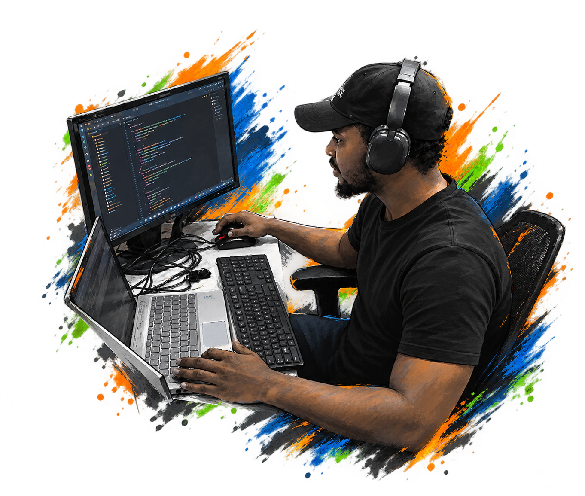

A visionary DevOps Engineer and NOC Team Lead operating at the precise intersection of traditional daily operations and cutting-edge AI.
ISP · NOC · Field Support
Automation · Python
ZTE · CDATA · Huawei
MikroTik · Cambium
A staunch practitioner of Deep Work methodologies, intentionally structuring workflows to minimize cognitive fragmentation. I unlock the high-concentration focus required to build custom AI-powered diagnostic engines, minimize MTTR, and engineer resilient AIOps infrastructure.
$ neofetch
OS: Ubuntu Linux 24.04 LTS · Windows
Role: DevOps Engineer · NOC Team Lead
Stack: Python · Docker · AWS · Azure · OpenAI
Network: GPON/EPON · OLT Automation · SNMP · MikroTik
$ _
Multi-Agent Routing · Function Calling · Prompt Engineering · Hallucination Mitigation · OpenAI SDK · LLM Fine-Tuning
Python (AsyncIO, Threading) · PySNMP · Telnetlib3 · Paramiko · RouterOS API · Ansible · Regex
Docker (Volumes, Networks) · AWS (EC2) · Microsoft Azure · CI/CD · Secret Management
NOC Operations · GPON/EPON Architecture · OSPF · VLANs · VoIP (Asterisk) · RADIUS/Diameter AAA
Real-world solutions built for ISPs, automation, and network telemetry.
A high-performance decision engine that classifies ONU outages (general vs isolated) with per-ONU signal diagnostics. Integrates with ZTE, HSGQ-G008, and CDATA OLTs reducing troubleshooting time by 90% for a 30k+ subscriber ISP.
AI-powered customer service agent for fiber ISPs. Automates Tier-1 support, diagnoses subscriber downtime, and performs ONU actions (WiFi management, device auditing, LOS detection) using OpenAI function calling.